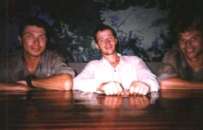

's Morgens vertrokken we vrij snel nadat we wakker waren geworden. Alles was nog drijfnat, behalve de dingen die ik aan had; dat was redelijk droog geworden. Ik trok mijn drijfnatte boots aan en we wilden nog wat aanbieden, maar niemand nam iets aan. Kil, die ons gisteren zo geholpen had, was nergens meer te bekennen.
We zouden eerst naar de Mataso lopen (de plek waar we ook met de bus waren aangekomen), zo'n 4,5 km vanaf hier. Op die plek zouden we ook indo-mie kunnen eten. Vanaf die plek zouden we daarna nog naar pastoor Peter Hoogland gaan om te vertellen dat we nog leefden. Dit was ook nog zo'n 6 km. De eerste wandeling naar de indo-mie viel mij zwaarder dan ik had verwacht. Mijn handen waren gevoeliger dan ooit en heel erg opgezet. Het pad waarover we liepen bestond uit allemaal steile heuveltjes. Mijn tas leek wel 10 kg zwaarder dan normaal; de tas was nog zeiknat. Het enige wat echt irritant was, was dat we geen druppel water bij ons hadden, terwijl ik al dorstig opstond. We hadden alleen lege waterflessen bij ons vanwege het drijfvermogen wat gisteren zo belangrijk was. Ik had een enorm droge keel, terwijl het steeds warmer werd. Tijdens een korte pauze kwamen we er achter dat de waterdichte zak waarin Ries' camera zat, vol zat met water. Het rolletje met jungle-foto's vond zelfs Ries erger om te missen dan de Samsung-zoom-camera van zo'n 700 gulden.
Eindelijk waren we in Mataso en ik smachtte naar water. Voor het eerst konden we gewoon aan een soort tafel zitten en iets bestellen. Gewoon betalen voor wat je wilt is ook wel prettig. We namen water, thee en indo-mie met ei. Het zat er heerlijk. De dringende zaakjes betreffende onze uitrusting konden we hier alvast regelen (alles was immers nat). Steven legde al veel van zijn spullen buiten neer waar de zon flink scheen. Ik repareerde mijn zaklamp, alhoewel hij bleef haperen. Nadat we nog een keer indo-mie bestelden, gingen Richard en ik 4 uur lang in ons dagboek schrijven om de belevenissen op papier te zetten. In de jungle waren we hier veel te weinig aan toe gekomen. Steven hielp mee en hij wist aardig wat (vergeten) details aan te vullen.
Het was ongeveer 13:00 uur dat we naar Benuamartinus (pastoor Peter Hoogland) liepen. De wandeling duurde iets minder dan 1,5 uur. Alle luiken voor de ramen waren dicht. We bedachten ons dat Peter verteld had dat hij zondag (na de kerk) vaak naar iemand toe gaat. We gingen even op de veranda zitten en al snel kwam er Indonesisch personeel. Peter bleek te slapen. Even later kwam hij. Het bleek dat hij al wist dat we eraan zouden komen. In Sadap (dorpje waar we gisteren aankwamen) wisten de mensen ook dat drie van die maffe Hollanders zonodig de jungle in moesten. Het allerlaatste nieuws (dat we weer aangekomen waren) was al weer gemeld in Benuamartinus. Het leek gisteravond ook net alsof iedereen van ons avontuur afwist. Nu hoorden we dat het niet alleen zo leek, maar dat het werkelijk zo was! Terwijl ik nog steeds op de veranda zat, merkte ik dat ik mezelf constant aan het krabben was. Ik had een enorme jeuk en zat werkelijk onder de kleine rode bultjes. Dit had ik overgehouden van de avond dat onze tent in elkaar zakte en ik met Steven hout ging zoeken in mijn zwembroek in het donker. Steven had precies dezelfde bultjes (inclusief jeuk).
|  |
Bij Peter aan de eettafel, vlak voordat we ons gaan wassen. |
Peter vond dat we even naar Ebok moesten gaan (de jager die ons de jungle in had gebracht) om te bewijzen dat we levend terug waren gekomen. Volgens Peter kon Ebok niet geloven dat we op eigen kracht terug konden komen. Wondertassen had hij onze rugtassen genoemd. "Wat zit daar toch allemaal in?" had hij aan Peter gevraagd terwijl wij in de jungle ons vlot aan het bouwen waren. Onze spullen die Ebok op de heenweg gezien had (hangtent, zaag, etc.) hadden al een enorme indruk op hem gemaakt. "Ze hadden een zaag en dat werkte ongelofelijk" had Ebok tegen Peter gezegd... Toen we bij Ebok en zijn familie aankwamen, keek Ebok eerst heel opgelucht waarna hij moest lachen en lachen. Hij bleef maar doorlachen. Toen we vertelden dat we een 'rakit' (vlot) gemaakt hadden, begon hij weer te schateren. Ook wees hij naar onze baarden die al 10 dagen stonden. Voordat we weer naar Peter gingen, hebben we wat cakejes en doppinda's voor de avond gekocht.
Om 17:30 uur ging Peter's generator aan, omdat de stroom het niet meer deed. Nu was Peter de enige met stroom in het dorp. We aten rijst, een gebakken ei, een beetje spinazie en zelf gemaakte heel sterke sambal. Toen hebben we ons gewassen wat in de jungle eigenlijk maar een keer was gebeurd. Het was heerlijk: wassen, scheren, nagels leegmesten en knippen, tanden poetsen, wonden met sterilon schoonmaken en talkpoeder op de weke voeten strooien. Ik probeerde ook mijn pet schoon te maken, omdat die wel erg zwart was. De bloedspatten van het varken (toen het borstbeen met de parang doorgehakt werd) gingen er niet meer uit.
's Avonds zaten we weer heel gezellig bij Peter. Alleen merkten we dat hij sommige anekdotes de vorige week al verteld had. Ook praatte hij iets te veel over zijn verlof in Nederland, terwijl wij juist verhalen over Kalimantan wilden horen. Wel vertelde hij over een rijke Chinees uit zijn buurt die een TV kocht. Hij woonde op de rivier (zoals velen in Kalimantan). Er kwamen zoveel Indonesiërs bij hem TV kijken, zodat iedereen tot zijn knieën in het water zat, omdat zijn huis begon te zinken. Een ander verhaal ging over een man die deze week gestorven was in het dorp. Een aantal andere mannen uit hetzelfde dorp gaan dan met z'n allen een kist timmeren. Bestellen gaat immers niet, want er is geen telefoon en geen goede infrastructuur. Tijdens het timmeren drinken de mannen veel arak en als de kist klaar is, dan gebruiken ze deze nog als tafel waarop ze een soort kaartspel spelen. De dood wordt hier als iets 'doodnormaals' gezien.
Peter vertelde dat alle mensen uit het dorp en de omliggende dorpen van ons avontuur op de hoogte zijn. Er zal nog veel over gepraat worden en we hadden volgens Peter een behoorlijke indruk achtergelaten met onze jungle-trip. Alle Dajaks (de inheemse bevolking in deze buurt) in deze omgeving zullen te horen krijgen dat er drie Nederlanders waren die zelfstandig uit de jungle kwamen met een zelfgebouwd vlot. Wat wij gedaan hadden, werd als onmogelijk gezien, aldus Peter. Het respect voor witte mensen bij de Dajaks zou volgens Peter zelfs stijgen. Verschillende vrouwen vroegen aan Peter in de kerk hoe het nou zit met die Nederlanders en of we al terug waren. "Sommige vrouwen waren echt bezorgd", zei Peter. Ook wist volgens Peter iedereen wat wij betaald hadden voor de jungle-dropping. Hierdoor is de marktwaarde van zo'n dropping vastgesteld. Ebok bleek trouwens Rp 180.000 geleend te hebben om de benzine te betalen. Benzine is hier relatief duur en stroomopwaarts varen kost enorm veel benzine (ongeveer 1 liter voor 1 kilometer). Verder bleek de boot niet van hem te zijn, maar van zijn broer. Wanneer de schroef zou breken, dan zou hij een groot verlies geleden hebben.
De avond hebben we verder volgepraat met veel leuke dingen waarvan ik me niet alles meer kan herinneren. We hebben bijvoorbeeld veel gepraat over Peter's huidige grote project: de bouw van een kerkje naast zijn huis met behulp van de lokale bevolking. Zie vrijdag 24 september voor meer informatie hierover en over pastoor Peter Hoogland. Rond 23:15 uur gingen we slapen. Peter deed de generator uit en de lichten doofden langzaam uit. De volgende dag zouden we terugreizen naar het stadje Putussibau.
Index